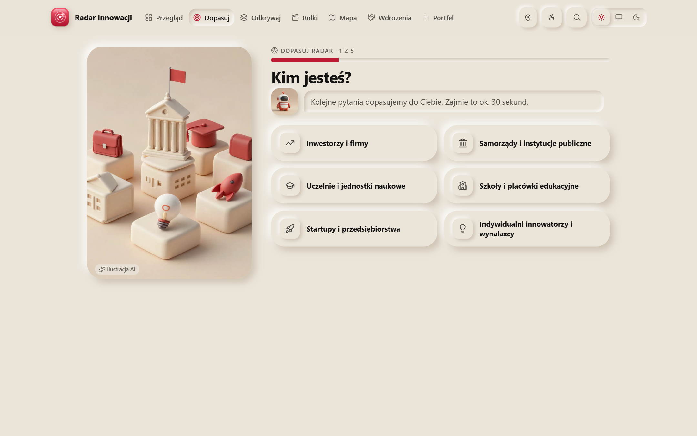
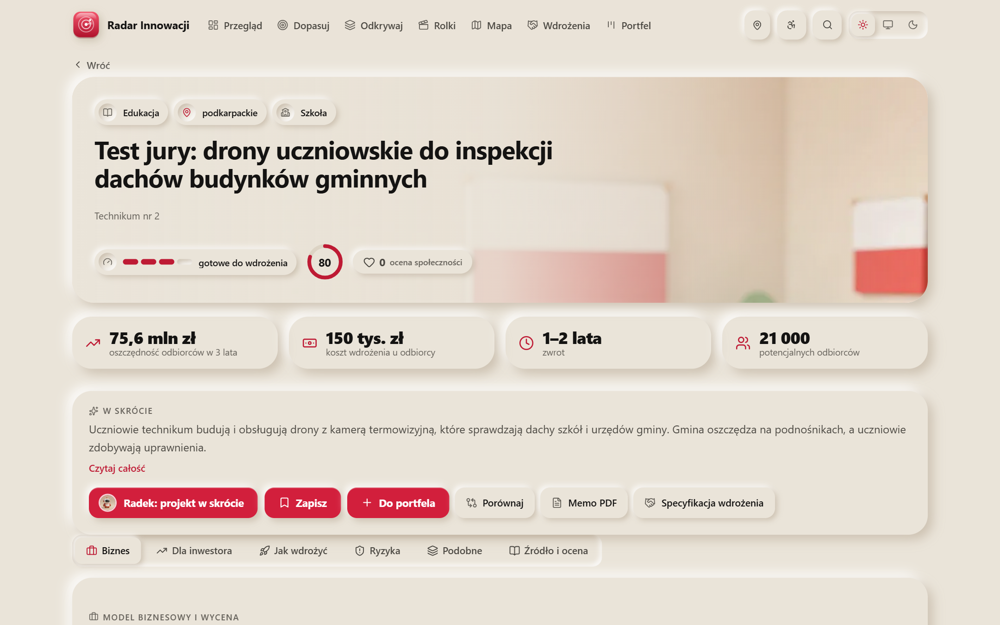
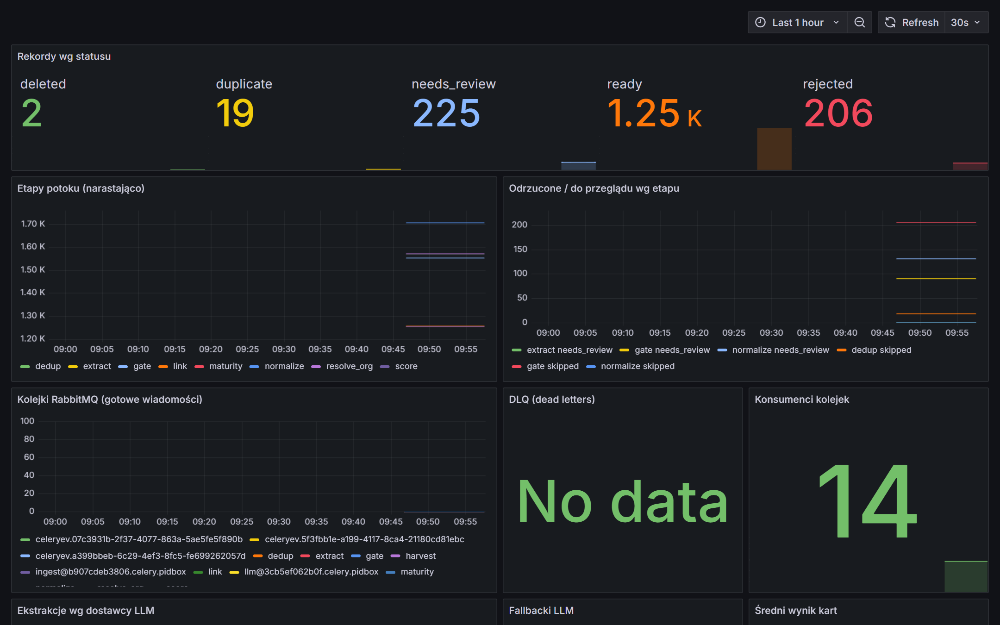

Radar, który sam znajduje polskie innowacje, wycenia je i pokazuje, kto może je wdrożyć.
HackNation 2026 · Podkarpackie Centrum Innowacji
1Problem
Pomysły leżą w kilkunastu bazach, raportach i serwisach uczelni.
Nikt nie mówi, czy pomysł jest gotowy, ile kosztuje i kto może go wdrożyć.
Gmina buduje to, co sąsiednia gmina już ma i co działa.
Rozwiązanie
Nowy pomysł w źródle radar wykrywa sam, ocenia i po chwili pokazuje gotową kartę.
źródło: /api/insights i /api/sources, {{stamp}}
3Dla kogo
Czy wdrożyć u siebie i za ile?
Czy wejść kapitałowo?
Z kim skomercjalizować wynik?
Jaki sprawdzony program powtórzyć?

Wartość biznesowa

Jak to działa
Nowe źródło danych to jeden wpis w konfiguracji, bez zmian w kodzie. Pobieranie respektuje limity serwisów i nie pobiera dwa razy tego samego.
Gotowe do wdrożenia

test obciążeniowy na prawdziwych danych: .house/reports/load-real.md
7Koszt i niezależność
Po przekazaniu wszystko działa na infrastrukturze zamawiającego. Żadna płatna usługa nie jest potrzebna do działania.
8Dostępność i jakość
Powiększenie tekstu, wysoki kontrast, czytelne odstępy, bez animacji, pełna obsługa klawiaturą.
Testy automatyczne każdej strony w jasnym i ciemnym motywie, 0 błędów dostępności (axe), Lighthouse 99.
Urząd marszałkowski widzi tylko swoje województwo: listy, mapę, dopasowanie i wdrożenia.
Następny krok
Radar Innowacji. Sprawmy razem, aby każdy dobry pomysł miał szansę na wdrożenie.
10